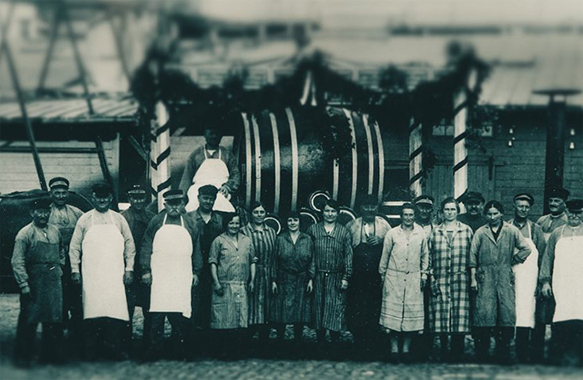
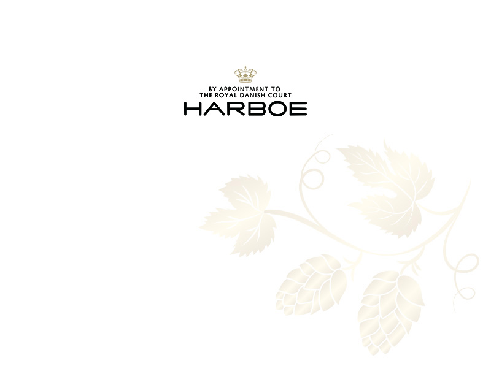
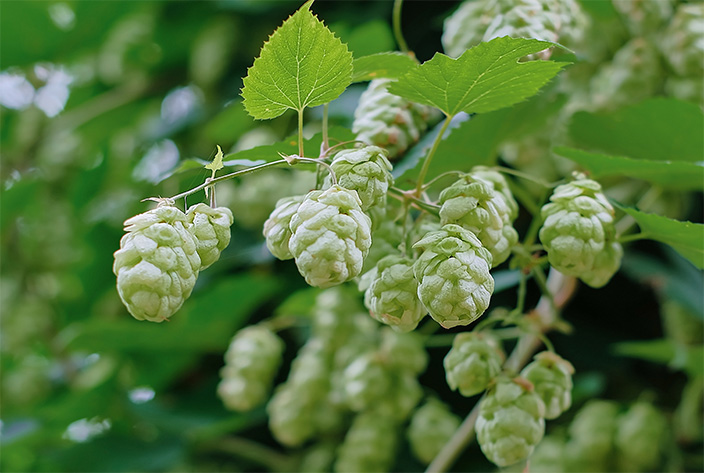

Historie
Brødrene Jørgen og Adolph Harboe besluttede i 1883 sammen med købmand Jørgen Lotz at bygge et helt nyt bryggeri i Skælskør, som kunne forsyne lokalmiljøet med godt og velsmagende øl. Bryggeriet kom til at hedde Harboe & Lotzs Bryggeri, og det blev første skridt i en lang rejse for Harboe-familien og virksomheden.

kontakt
Harboes Bryggeri A/S
Spegerborgvej 34.
4230 Skælskør
Tel.:+45 5816 8888
post@harboes-bryggeri.dk

